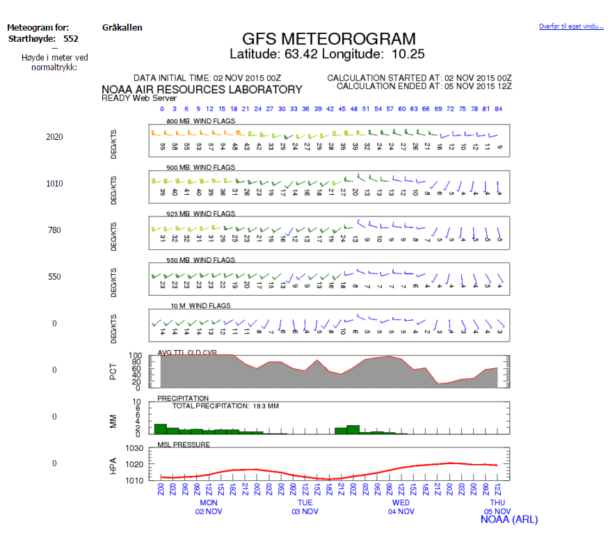
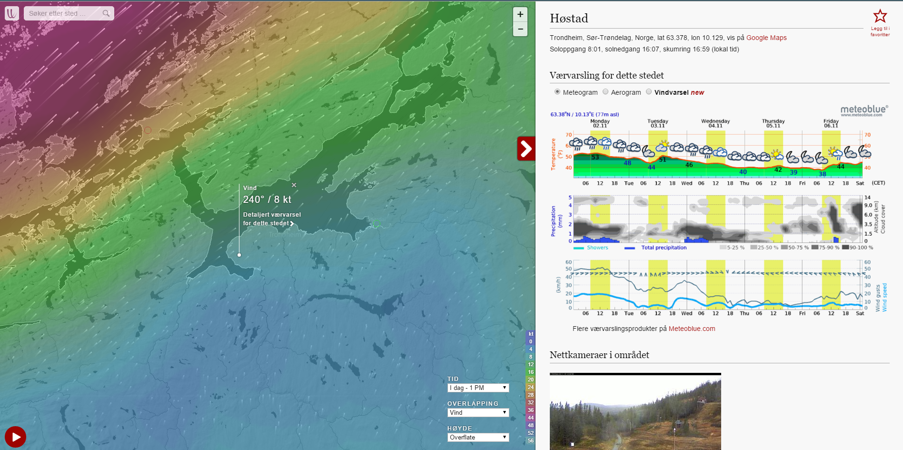
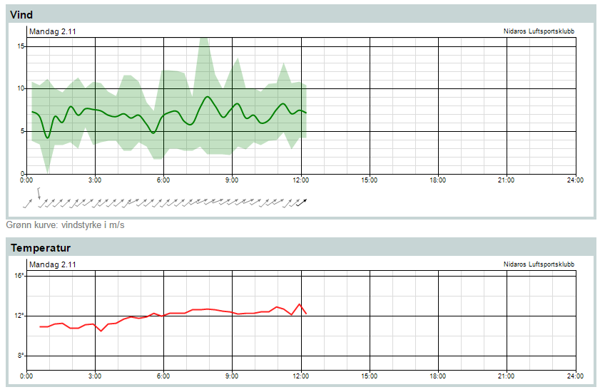

Trondheim Paragliding klubb
Yr.no og Pent.no
Datamaskinen kan raskt regne ut den mest sannsynlige værutviklingen for veldig mange steder. Meteorologen
bruker sin fagkunnskap og erfaring til å lage varsler for større områder i Norge (fylker og havområder) i
tillegg til spesialvarsler om farlig vær.
«Meteorologens varsel» finner du under kartet på «oversikt», til høyre for «langtidsvarsel» og under
tabellen på «time-for-time».
Et godt tips er å sammenholde symbolene med tekstvarslene. Er det store forskjeller bør du stole på
«Meteorologens varsel» (tekstvarselet).
Kombinasjonen av varsel for et sted og meteorologens varsel for et fylke gir deg den beste værprognosen!
Sjekk også hvordan været er nå på målestasjoner i nærheten. Observasjonene finner du nederst på «oversikt»
og fra forsiden «siste observasjoner».
NOOA
NOOA Meteogrammet består av flere "bokser" som inneholder piler og tall. Pilene indikerer vindens retning, mens tallene indikerer vindens styrke. Styrken er her målt i knop, og kan lett omgjøres til m/s ved å dele på 2. (Omtrentlig regning)
De forskjellige boksene gir vin i forskjellige høyder. Høydene kan sees på trykket til venstre for boksene.
AVG CLD CVR står for Average Cloud Cover og gir en prosent på skydekke.
Precipitation angir regn i millimeter fordelt på 2 timers intervaller.
MSL Pressure viser atmosfærisk trykk
Eksempel værmelding RASP
Rasp er et verktøy hvor du kan lese termikk varsler.
Windyty
Windyty er et verktøy som visuelt fremstiller værdata på en måte som er veldig lett å lese. I tillegg til denne visuelle fremstillingen har den innebygde muligheter for å vise meteogram, aerogram og vindvarsel. Via disse verktøyene kan du lese av vindstyrker, nedbør og mer. Windyty viser også webkameraer som ligger i nærheten av stedet du undersøker.
Eksempel værmelding Vindsiden
Vindsiden lar deg lese av vindens retning (piler) og styrke i m/s. Vindsiden gir deg også mulighet til å lese av temperatur. Disse dataene er i sanntid.
Eksempel værmelding 